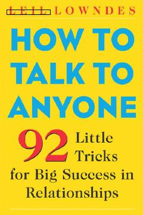

HTOdamlar bilan samarali muloqot qilish va muvaffaqiyatga erishish uchun 92 ta amaliy tavsiya.
Ushbu kitob odamlar bilan samarali muloqot qilish va ijtimoiy ko'nikmalarni rivojlantirish bo'yicha 92 ta amaliy maslahatni o'z ichiga oladi. Muallif Leil Lowndes o'quvchilarga o'ziga ishonchni oshirish, suhbatdoshda ijobiy taassurot qoldirish va mustahkam munosabatlar o'rnatish usullarini tushuntiradi.